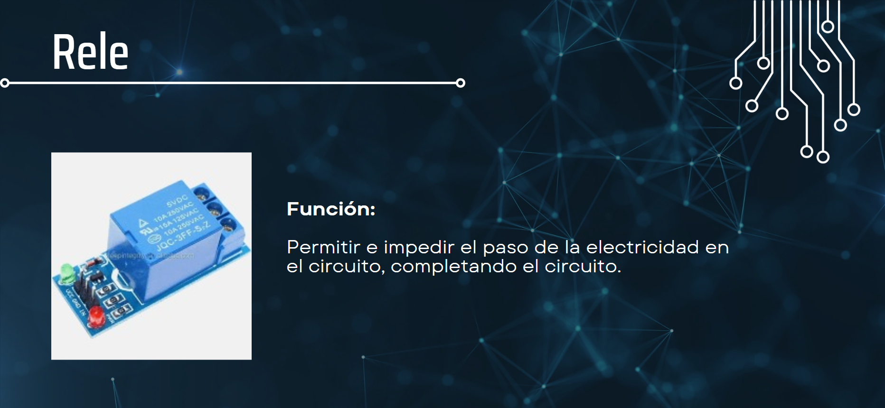

Desarrollo del Producto
AutoOff
Crear un adaptador con la característica de apagado automático según un tiempo programado.
AutoOff funciona con los siguientes componentes:
• Pulsadores

Nuestro Circuito
V1.0
Este dispositivo funcionará conectado a un toma corriente principal, pero apagado por un temporizador, apoyando al ahorro de dinero, cuidado de la energía y salud de las baterías de distintivos dispositivos.